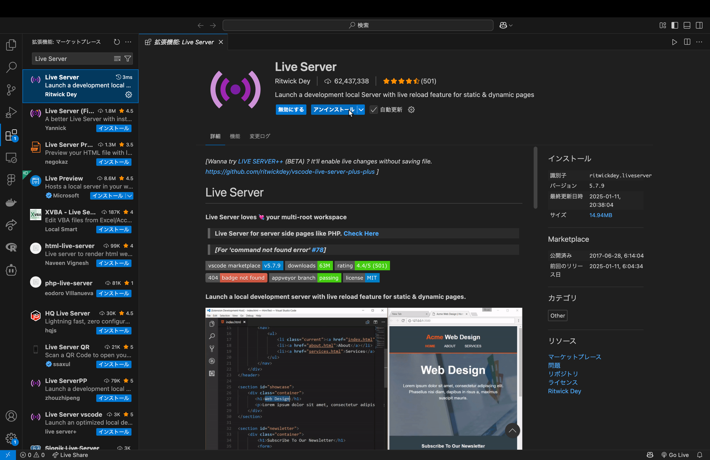
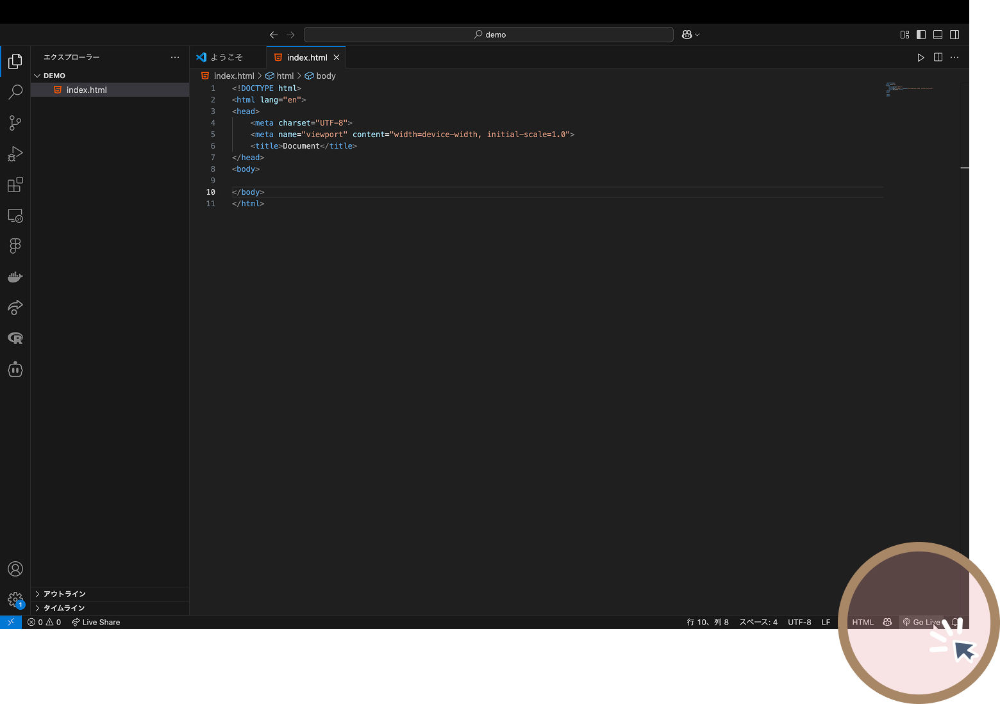
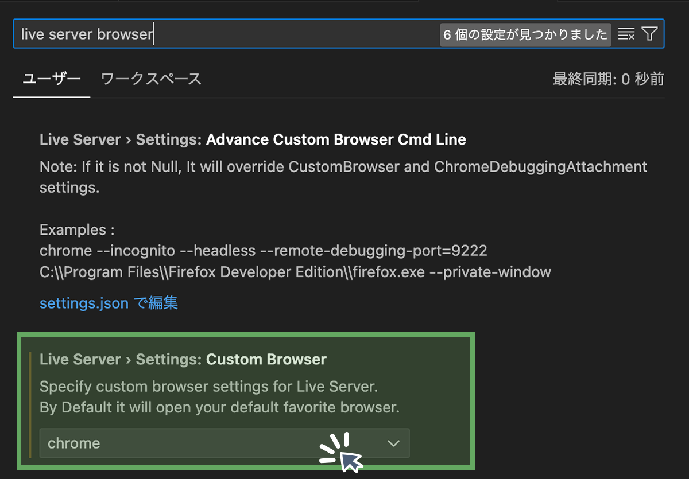

Home
VSCode 拡張機能で始めるWeb開発 - Live Server編
はじめに
Visual Studio Code（VSCode）のLive Server機能は、Web開発の効率を大幅に向上させるツールです。このマニュアルでは、Web開発を始めたばかりの方向けに、Live Serverの基本的な使い方から応用までを解説します。
Live Serverは、ローカル環境でWebページをリアルタイムにプレビューできる拡張機能です。HTMLやCSS、JavaScriptファイルを保存するたびに、ブラウザが自動的に更新されるため、手動でリロードする手間が省けます。
Live Serverを使うメリット：
- ブラウザを手動でリロードする必要がなく、作業効率が向上します。
- 複数のデバイス（スマホやタブレット）で同時に動作確認ができます。
- 簡単な設定でローカルサーバーを立ち上げられるため、初心者でもすぐに使い始められます。
Live Serverは、ローカルサーバーを立ち上げて、ブラウザとVSCodeの間で通信を行います。ファイルが保存されると、Live Serverがその変更を検知し、ブラウザに通知して自動的にページを更新します。
1. Live Serverのインストール
Live Serverは標準でVSCodeに搭載されていないため、拡張機能としてインストールする必要があります。

2. Live Serverを使ったプレビューの表示
Live Serverを使えば、HTMLファイルの変更を保存するたびに自動的にブラウザが更新され、変更内容がすぐに確認できます。
基本的な起動方法
- VSCodeでWebプロジェクトを開きます
- HTMLファイル（例：index.html）を選択します
- エディタ右下の「Go Live」ボタンをクリック

Live Serverの停止方法
- 起動の時に押した部分：エディタ右下の「Port: 5500」のような表示をクリックします
プレビューの確認
Live Serverを起動すると、自動的にデフォルトブラウザでプロジェクトが表示されます。基本的なURLは以下のようになります：
http://127.0.0.1:5500/index.html
または
http://localhost:5500/index.html
3. ブラウザの変更方法
Live Serverは標準で、システムのデフォルトブラウザを使用します。別のブラウザでプレビューを確認したい場合は、設定を変更します。
ブラウザ設定の変更手順
- VSCodeの左下の歯車アイコン（設定）をクリックし、「設定」を選択します
- 検索バーに「live server browser」と入力します
- 「Live Server > Settings: Custom Browser」で以下のいずれかを選択します：
- chrome
- firefox
- microsoft-edge
- safari

4. トラブルシューティング
よくある問題と解決策
-
Live Serverが起動しない
- VSCodeを再起動する
- ポート5500が他のアプリケーションで使用されていないか確認する
- 設定で別のポートを指定する
-
変更が反映されない
- ファイルを保存していることを確認する（Ctrl+S）
- ブラウザのキャッシュをクリアする
- Live Serverを再起動する
-
CSSやJavaScriptの変更が反映されない
- リンク先のパスが正しいか確認する
- ブラウザの開発者ツールでエラーを確認する
- ブラウザのキャッシュを無効にする
-
特定のブラウザでのみ問題が発生する
- 複数のブラウザでテストして問題を切り分ける
- ブラウザの互換性を確認する
サポート情報の確認方法
問題が解決しない場合は、Live Server拡張機能の公式ドキュメントやGitHubリポジトリを参照してください：
5. +α 自身のスマホやタブレットでも確認してみたい時は？
自身のスマホでページをみたい時は、こんな方法を試してみましょう。
a.Chromeの検証機能を使う
Chromeの検証機能を使うことで、スマホやタブレットでの表示を確認できます。
- Chromeブラウザを開きます
- F12キーを押して開発者ツールを表示します
- 左上のデバイスアイコンをクリックして、スマホやタブレットの表示に切り替えます
b.LiveServerの機能を使う
Live Serverの機能を使うことで、自身の実機での表示を確認できます。
- PCと接続したいデバイスを同じWi-fiに繋ぎます。
- VSCodeの設定を開きます
- 検索バーに「live server settings:Use Local Ip」と入力し,チェックを入れます。
- Live Serverを起動します
- 開いたプレビュー画面の検索バーのリンクを何らかの方法で表示したい端末に送ります。
- QRcodeを読み取る
- Discodeに送る
- Air Drop
注意：
- 同じWi-Fiネットワークに接続されていない場合、デバイスからアクセスできません。
- 一部のネットワーク環境（企業や学校のWi-Fiなど）では、デバイス間の通信が制限されている場合があります。
- セキュリティ上の理由から、公開するプロジェクトには機密情報を含めないようにしてください。
まとめ
Live Serverは、Web開発初心者にとって非常に便利なツールです。リアルタイムでの変更確認、複数デバイスでのテスト、簡単な設定などの特長を活かして、効率的な開発環境を構築しましょう。実際のプロジェクトでは、このマニュアルで紹介した機能を組み合わせて活用することで、より快適なWeb開発体験が得られます。